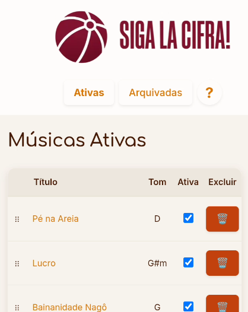
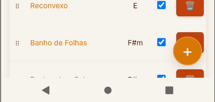
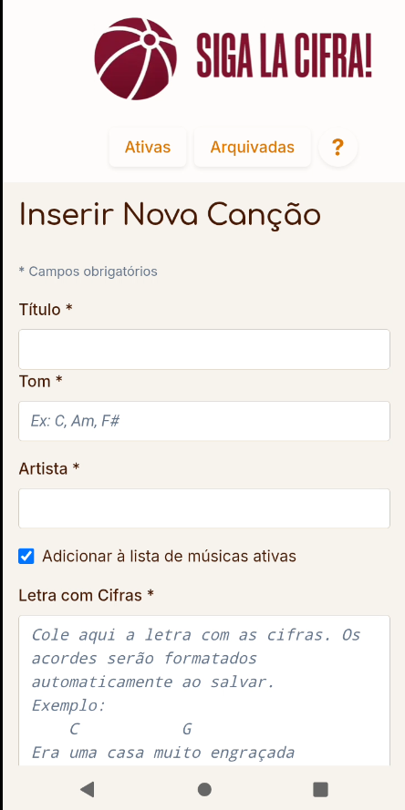
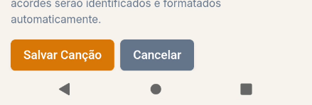
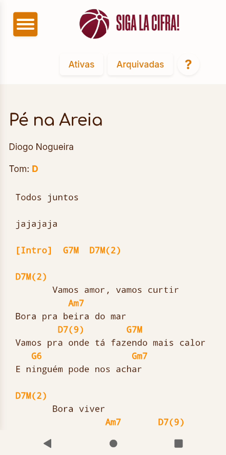
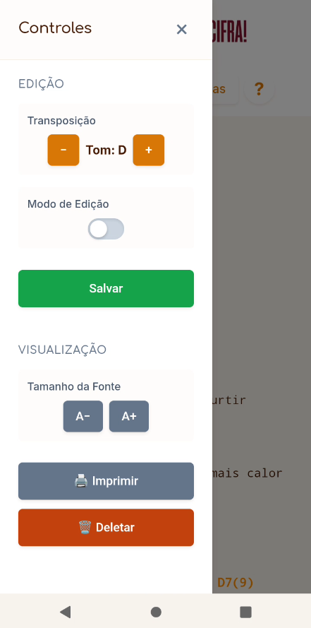

📱 Como Usar o Siga La Cifra!
Gerenciando suas músicas
Lista de Músicas

- Ativas/Arquivadas: Alterne entre as duas abas no cabeçalho para ver músicas ativas ou arquivadas
- Reordenar: Arraste músicas pela alça (⋮⋮) para reorganizar a ordem
- Ativar/Arquivar: Use o checkbox para mover músicas entre ativas e arquivadas
- Excluir: Toque no ícone 🗑️ para deletar permanentemente
Adicionar Nova Música

Toque no botão + (laranja) no canto inferior direito.


Preencha:
- Título e Artista
- Tom (ex: D, G#m, F)
- Letra com cifras: Cole direto do Cifra Club ou digite manualmente
Os acordes serão formatados automaticamente ao salvar.
Visualizando uma Música

Toque no título de qualquer música para abri-la.
Controles (menu lateral)

Toque no ícone hambúrguer (≡) no canto superior esquerdo para abrir os controles:
Edição:
- Transposição (− / +): Mude o tom da música
- Modo de Edição: Ative para editar a letra e acordes diretamente
- Salvar: Salve suas alterações
Visualização:
- Tamanho da Fonte (A− / A+): Ajuste o tamanho do texto
- Imprimir 🖨️: Gere um PDF para impressão
- Deletar 🗑️: Remova a música